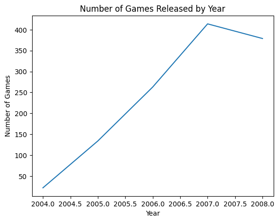

---
title: "Ted's Final Project"
description: "An analysis of video Game Metrics from 2004 to 2010"
author: "Ted Yarmoski"
date: "03/08/2023"
date-modified: "03/08/2023"
---Intro
Description
This data contains the sales and playtime of 1000+ video games released between 2004 and 2010.
https://corgis-edu.github.io/corgis/python/video_games/
Motivation
I have always been interested in video games and I would like to investigate whether there is a correlation between various playtime metrics (avg, min lengths to beat, etc.) and sales numbers for those video games.
Data Exploration
import pandas as pd
import requests
from bs4 import BeautifulSoup
import matplotlib.pyplot as plt
def get_dataset_df(dataset_name):
dataset_name = dataset_name.lower()
dataset_name = dataset_name.replace(" ", "_")
site_name = f"https://corgis-edu.github.io/corgis/csv/{dataset_name}"
response = requests.get(site_name)
soup = BeautifulSoup(response.content, "html.parser")
csv_link = [link["href"] for link in soup.find_all("a") if link.has_attr('download')][0]
csv_link = csv_link[6:]
csv_link = f"https://corgis-edu.github.io/corgis/{csv_link}"
df = pd.read_csv(csv_link)
return dfdf = get_dataset_df("Video Games")
df.info()<class 'pandas.core.frame.DataFrame'>
RangeIndex: 1212 entries, 0 to 1211
Data columns (total 36 columns):
# Column Non-Null Count Dtype
--- ------ -------------- -----
0 Title 1212 non-null object
1 Features.Handheld? 1212 non-null bool
2 Features.Max Players 1212 non-null int64
3 Features.Multiplatform? 1212 non-null bool
4 Features.Online? 1212 non-null bool
5 Metadata.Genres 1212 non-null object
6 Metadata.Licensed? 1212 non-null bool
7 Metadata.Publishers 948 non-null object
8 Metadata.Sequel? 1212 non-null bool
9 Metrics.Review Score 1212 non-null int64
10 Metrics.Sales 1212 non-null float64
11 Metrics.Used Price 1212 non-null float64
12 Release.Console 1212 non-null object
13 Release.Rating 1212 non-null object
14 Release.Re-release? 1212 non-null bool
15 Release.Year 1212 non-null int64
16 Length.All PlayStyles.Average 1212 non-null float64
17 Length.All PlayStyles.Leisure 1212 non-null float64
18 Length.All PlayStyles.Median 1212 non-null float64
19 Length.All PlayStyles.Polled 1212 non-null int64
20 Length.All PlayStyles.Rushed 1212 non-null float64
21 Length.Completionists.Average 1212 non-null float64
22 Length.Completionists.Leisure 1212 non-null float64
23 Length.Completionists.Median 1212 non-null float64
24 Length.Completionists.Polled 1212 non-null int64
25 Length.Completionists.Rushed 1212 non-null float64
26 Length.Main + Extras.Average 1212 non-null float64
27 Length.Main + Extras.Leisure 1212 non-null float64
28 Length.Main + Extras.Median 1212 non-null float64
29 Length.Main + Extras.Polled 1212 non-null int64
30 Length.Main + Extras.Rushed 1212 non-null float64
31 Length.Main Story.Average 1212 non-null float64
32 Length.Main Story.Leisure 1212 non-null float64
33 Length.Main Story.Median 1212 non-null float64
34 Length.Main Story.Polled 1212 non-null int64
35 Length.Main Story.Rushed 1212 non-null float64
dtypes: bool(6), float64(18), int64(7), object(5)
memory usage: 291.3+ KBdf.describe()| Features.Max Players | Metrics.Review Score | Metrics.Sales | Metrics.Used Price | Release.Year | Length.All PlayStyles.Average | Length.All PlayStyles.Leisure | Length.All PlayStyles.Median | Length.All PlayStyles.Polled | Length.All PlayStyles.Rushed | ... | Length.Main + Extras.Average | Length.Main + Extras.Leisure | Length.Main + Extras.Median | Length.Main + Extras.Polled | Length.Main + Extras.Rushed | Length.Main Story.Average | Length.Main Story.Leisure | Length.Main Story.Median | Length.Main Story.Polled | Length.Main Story.Rushed | |
|---|---|---|---|---|---|---|---|---|---|---|---|---|---|---|---|---|---|---|---|---|---|
| count | 1212.000000 | 1212.000000 | 1212.00000 | 1212.000000 | 1212.000000 | 1212.000000 | 1212.000000 | 1212.000000 | 1212.000000 | 1212.000000 | ... | 1212.000000 | 1212.000000 | 1212.000000 | 1212.000000 | 1212.000000 | 1212.000000 | 1212.000000 | 1212.000000 | 1212.000000 | 1212.000000 |
| mean | 1.658416 | 68.828383 | 0.50316 | 17.393894 | 2006.820132 | 13.653177 | 26.250426 | 11.225371 | 44.415842 | 9.396163 | ... | 12.731491 | 18.866048 | 12.103548 | 13.995875 | 10.319788 | 8.465952 | 11.051966 | 8.280941 | 24.882838 | 6.974697 |
| std | 1.204377 | 12.956266 | 1.06985 | 5.018972 | 1.050653 | 19.397156 | 51.598941 | 13.493717 | 154.837893 | 11.176371 | ... | 23.979610 | 42.917021 | 23.355374 | 57.333257 | 20.895117 | 9.691745 | 14.092617 | 9.502600 | 87.382770 | 7.964522 |
| min | 1.000000 | 19.000000 | 0.01000 | 4.950000 | 2004.000000 | 0.000000 | 0.000000 | 0.000000 | 0.000000 | 0.000000 | ... | 0.000000 | 0.000000 | 0.000000 | 0.000000 | 0.000000 | 0.000000 | 0.000000 | 0.000000 | 0.000000 | 0.000000 |
| 25% | 1.000000 | 60.000000 | 0.09000 | 14.950000 | 2006.000000 | 3.562500 | 4.000000 | 3.025000 | 1.000000 | 2.600000 | ... | 0.000000 | 0.000000 | 0.000000 | 0.000000 | 0.000000 | 0.000000 | 0.000000 | 0.000000 | 0.000000 | 0.000000 |
| 50% | 1.000000 | 70.000000 | 0.21000 | 17.950000 | 2007.000000 | 8.858333 | 12.000000 | 8.000000 | 6.000000 | 6.708333 | ... | 7.291667 | 8.000000 | 7.000000 | 1.000000 | 6.283333 | 6.575000 | 8.000000 | 6.041667 | 3.000000 | 5.341667 |
| 75% | 2.000000 | 79.000000 | 0.46000 | 17.950000 | 2008.000000 | 16.033333 | 27.600000 | 13.783333 | 25.000000 | 11.366667 | ... | 16.112500 | 21.033333 | 15.000000 | 7.000000 | 12.941667 | 11.033333 | 14.508333 | 10.533333 | 14.000000 | 9.312500 |
| max | 8.000000 | 98.000000 | 14.66000 | 49.950000 | 2008.000000 | 279.733333 | 476.266667 | 126.000000 | 2300.000000 | 120.200000 | ... | 291.000000 | 478.933333 | 291.000000 | 1100.000000 | 291.000000 | 72.383333 | 135.583333 | 70.000000 | 1100.000000 | 70.000000 |
8 rows × 25 columns
genre_count = df['Metadata.Genres'].value_counts()
plt.pie(genre_count, labels=genre_count.index, explode=[0.1]*len(genre_count))
plt.title('Game Genres')
plt.axis('equal')
plt.show()
# Group the data by publisher and sum the global sales
publisher_sales = df.groupby('Metadata.Publishers')['Metrics.Sales'].sum().sort_values(ascending=False)
top_publishers = publisher_sales[:10]
plt.bar(top_publishers.index, top_publishers)
plt.xticks(rotation=90)
plt.title('Top 10 Publishers by Global Sales')
plt.xlabel('Publisher')
plt.ylabel('Global Sales (millions)')
plt.show()
year_count = df.groupby('Release.Year')['Title'].count()
plt.plot(year_count.index, year_count)
plt.title('Number of Games Released by Year')
plt.xlabel('Year')
plt.ylabel('Number of Games')
plt.show()# Group the data by genre and sum the sales
genre_sales = df.groupby('Metadata.Genres')['Metrics.Sales'].sum().sort_values(ascending=False)
# Create a scatter plot of game sales by genre
plt.figure(figsize=(12,6))
plt.scatter(genre_sales.index, genre_sales)
plt.xticks(rotation=90)
plt.title('Game Sales by Genre')
plt.xlabel('Genre')
plt.ylabel('Global Sales (millions)')
plt.show()Analysis
plt.scatter(df['Metrics.Review Score'], df['Length.All PlayStyles.Average'], alpha=0.5)
plt.title('Review Score vs. Average Playtime')
plt.xlabel('Review Score')
plt.ylabel('Average Playtime')
plt.show()
From the chart above, we can see that there is slight correlation between critic review score and average time to complete the game.
filtered_df = df[(df['Length.All PlayStyles.Average'] >= 1) & (df['Length.All PlayStyles.Average'] <= 50)]
plt.scatter(filtered_df['Length.All PlayStyles.Average'], filtered_df['Metrics.Sales'], alpha=0.5)
plt.title('Game Sales by Length/Playtime (<50 hours)')
plt.xlabel('Length/Playtime (hours)')
plt.ylabel('Global Sales (millions)')
plt.show()This chart shows that there is no strong correlation between game sales and average playtime. This may indicate that simply having a longer game does not equate to a stronger game (quantity not necessarily better than quality).
# Group the data by release year and sum the sales
year_sales = df.groupby('Release.Year')['Metrics.Sales'].mean()
# Create a line plot of global sales by release year
plt.plot(year_sales.index, year_sales)
plt.title('Global Sales by Release Year')
plt.xlabel('Release Year')
plt.ylabel('Global Sales (millions)')
plt.show()While the chart may indicate a large dip in sales around 2007, by examining the y-axis we can see that there has not been a huge shift in sales numbers over the years.
sales_by_console = df.groupby('Release.Console')['Metrics.Sales'].mean()
# Create a bar chart of global sales by console
plt.bar(sales_by_console.index, sales_by_console)
plt.xticks(rotation=90)
plt.ylabel('Global Sales (millions)')
plt.title('Global Sales by Console')
plt.show()
This chart shows, using the mean sales on each console platform, that to some extent, the console that the game runs on contributes to how many sales that game gets. This chart makes sense since the Nintendo Wii was extremely popular and thus games on it tended to sell more copies because more people had access to the hardware.